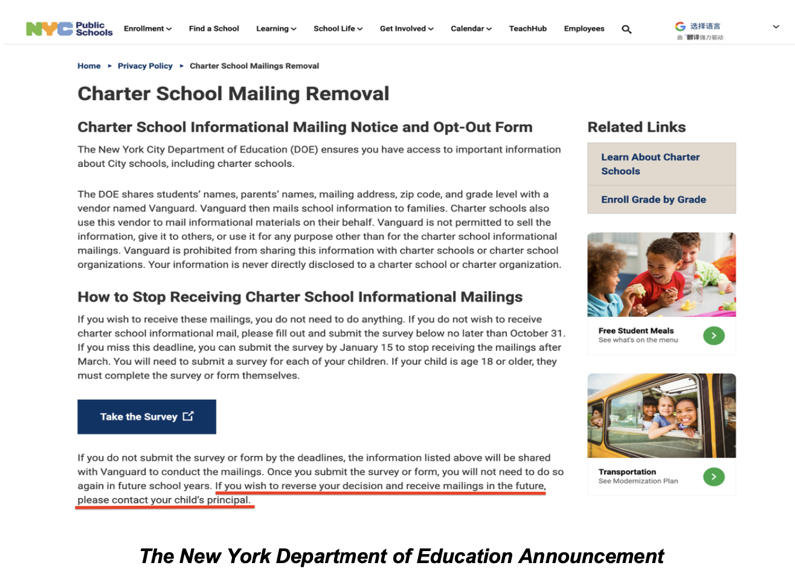
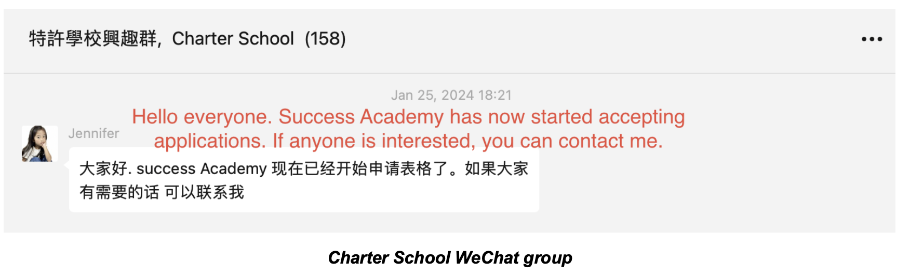
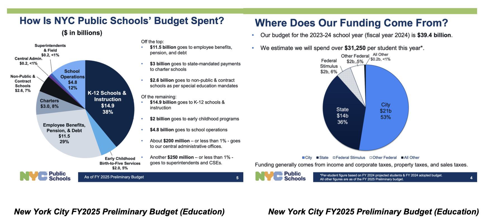
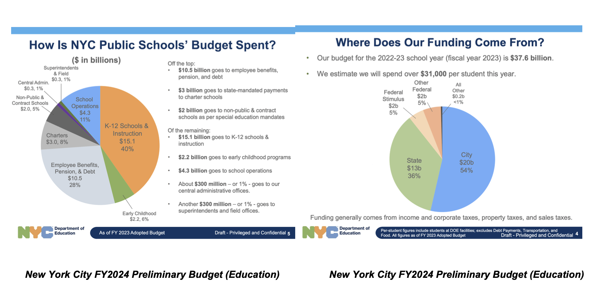

On a frigid Friday in March 2023, the weather fogged up the windows of the stores outside the NYC City Halls. Dozens of parents, clad in heavy jackets and wrapped in scarves, braved the severe cold.
“NYC NEEDS MORE CHARTERS! LIFE THE CAP!” they shouted.
The vivid red of the signs injected a burst of vitality into the winter scene, and the people’s voices put new energy into a longstanding NYC debate about education. Just as the voices of Black and Hispanic families have come to dominate the long-standing debate over charter schools, a new voice is emerging in this debate, bringing a fresh dynamic to the discussion — an increasing number of Asian parents in New York City are beginning to openly express their interest in charter schools.
As the parents were demonstrating, Governor Hochul and the state legislature were debating her 2023 - 2024 budget plan, which at one point had included the possibility of allowing for the opening of 100 charter schools in NYC. In the end, last April, they agreed on 14 charter schools in the budget that passed, still a notable number, and a partial victory for the charter school movement. Parents like these outside City Hall had sparked new flames in an old debate.
From 2019 to 2022, Asian student enrollment in charter schools surged by 30%, a significant increase second only to the 50% growth seen among Hispanic students. Meanwhile, the total enrollment of Asian students in all charter schools increased by 11,000, from 2.9% to 3.4% of the whole.
“We have seen Asian parents’ interest in charter schools increasing. Our organization has received 100 requests about how to apply to charter schools in just one month.” said Kaiwen Zhao, the executive director of New York City Parents, an organization that represents 6,000 New York Asian parents. Zhao spoke to crowds at the March rally.
Grace Chang is one of those parents Zhao mentioned.
In 2020, one year after Chang enrolled her son, Sun, at PS 196 Grand Parkway, ranked among New York’s best elementary schools by U.S News and World Report, she decided to transfer him to the Success Academy Charter School in Union Square.
Chang’s disappointment with PS 196 began soon after she enrolled her son in 2019. She had only one 10-minute meeting with the teacher to discuss grades, she says. Then came the pandemic. In March 2020, PS 196 transitioned to remote learning. Chang’s disappointment turned into anger when the school switched to instruction online.
Chang said she felt disconnected from the school. “For an entire month after the school announced online classes, we didn’t receive any assistance on a range of things, from technology to assignments to homework,” she said.
Especially frustrating, she said, was the curriculum.
At that time, the teaching style involved the teacher speaking for only 10 minutes in an hour-long class, with the rese dedicated to student practice. Sun always finished his work within five minutes. his mother said, and then fell asleep during class.
Chang says she has had enough. In second grade, she transferred to Sun to Success Academy, a charter school with over 50 locations around New York City. Sun went to the school in Union Square, an hour-long commute each day.
“I regret not transferring my son sooner,” said Chang.
Chang is happy with her son’s experience at Success Academy, mostly due to the fact that she feels the school challenges her son. Every morning, he gets a two-sided worksheet, usually math exercises. The school has a rule that whoever finishes the morning worksheet first gets to correct others’ assignments. As a result, her son strives to be the first to arrive at school, the first to receive the worksheet, and first to complete it.
“This school aligns with the views of most Asian parents on education, which is to maintain a tight grip on learning,” said Chang, “many people say that we Asians are creating machines for exams, but what I want to say is that the pressure in today’s society is indeed very significant.”
Chang is certainly not the only Asian parents satisfied with such strict teaching discipline. And this is why Chris M. Kwok, a staff member of Cornell’s Asian American Resource Center, was not surprised by the Asian increase in charters.
In Kwok’s research paper, The Inscrutable SHSAT, he mentioned how Asian immigration brought the culture of test preparation to the U.S. This culture originated in China from the development of the civil service imperial examination system. And this examination system “did not frame it as a measure of natural intelligence,” according to Kwok, but rather as a measure of how much academic effort an individual was willing to commit to.
This aspect of their culture made some Asian parents place more value on effort, delayed gratification and strict management.
“They looked at charter schools and they saw values that match theirs,” said Chris M. Kwok, “they love it.”
Certainly, the academic performance of charter schools in New York City has not disappointed Asian parents who place a high value on grades and learning.
In 2022, six out of the 20 New York state schools that received the National Blue- Ribbon School Award were New York City charter schools. The award recognizes a school’s academic excellence and, according to the website, its “progress in closing achievement gaps.”
In addition, charter school students in New York achieved higher proficiency in language arts and math compared to their peers in district schools, according to the 2021-2022 NYC Charter School Center's Test Score Analysis.
Asian Americans may be placing a high premium on those statistics.
But why now? Why have charter schools become well known to Asian families in recent years?
One reason: some Asian parents might have never heard of charter schools earlier, or might have missed opportunities to learn about them, due to communication gaps.
Donghui Zang, a father of two, from Bayside, Queens sent his children to traditional public schools several years ago. He “had no idea about the existence of charter schools at the time. He does remember his sons bringing home a DOE form that asked parents to sign if they didn't want to receive charter school promotional mailings. He signed it.
This is a service provided by the DOE. If parents are unwilling to receive advertisements about charter schools in the future, they only need to sign on the DOE's official website or on the paper notice distributed by the school. And once a parent signs, they will be permanently blocked from receiving information from charter schools. If they wish to reverse this decision, parents need to meet with the school's principal.
“A lot of parents may not carefully read the notices sent out by the schools, assuming that since the Department of Education (DOE) sent the notice for signature, we are obligated to sign it,” said Zang. Because of this, parents may miss out on news about charter schools.
For many families, especially those new immigrant families who are not yet familiar with their new environment, advertising may be their only way to learn about charter schools. To improve this situation and ensure that every Asian family has more educational opportunities, some Asian organizations in New York have been working recently to raise awareness.
More people have started to become aware of this issue and have begun to take action. Linda Liam is the vice president of the Chinese American Citizens Alliance Greater New York. She is in charge of the organization's efforts to promote NYC Charter schools to interested Asian parents. The Alliance has collaborated with Success Academy Charter School to hold two online webinars in 2022 and 2023 respectively. Their organization has also formed a WeChat group (it is like a WhatsApp group) for interested parents. There are almost 150 parents in that group.
At the end of January each year, which is when Success Academy starts accepting enrollment applications, someone in the group will be specifically responsible for guiding parents on how to fill out the application.
In addition, voices from the Asian community have also started to appear on the political stage, supporting the increase of charter schools. And in some cases, specifically bilingual charters.
“An Immediate need is dual language charter schools - from our elementary to middle school and high school,” said Lester Chang, the assemblymember of NY district 49. “Supporting charter schools” is listed as one of his ongoing efforts.
So, what would it mean for New York City if an increasing number of bilingual charter schools really start to appear?
“Most likely it would attract less affluent but ambitious parents,” said Dr. Christine Rossell, a Professor Emerita of Political Science at Boston University.
Also she said, some affluent parents, especially those from middle-class families, might find it hard to resist charter schools that offer immersive bilingual education.
But as of now, New York City seems not to have taken any measures to respond to this idea. In January, Mayor Adams of New York City released his FY 25 Preliminary Budget Plan. Although the funding overall allocated by New York State for this year is 1 billion more than for FY24 (which may be due to inflation), it can be seen from the budget plan released by New York City that the funding for charter schools is still maintained at $3 billion, accounting for 8% of the total education allocation. New York City seems poised to focus more on non-charter schools and on employee benefits, with investment percentages in those realms increasing by 2% and 1%, respectively.
 A lot of debate about exactly how the budget pie is to be sliced is still ahead, and it seems likely that Asians will be in the mix.
-END-